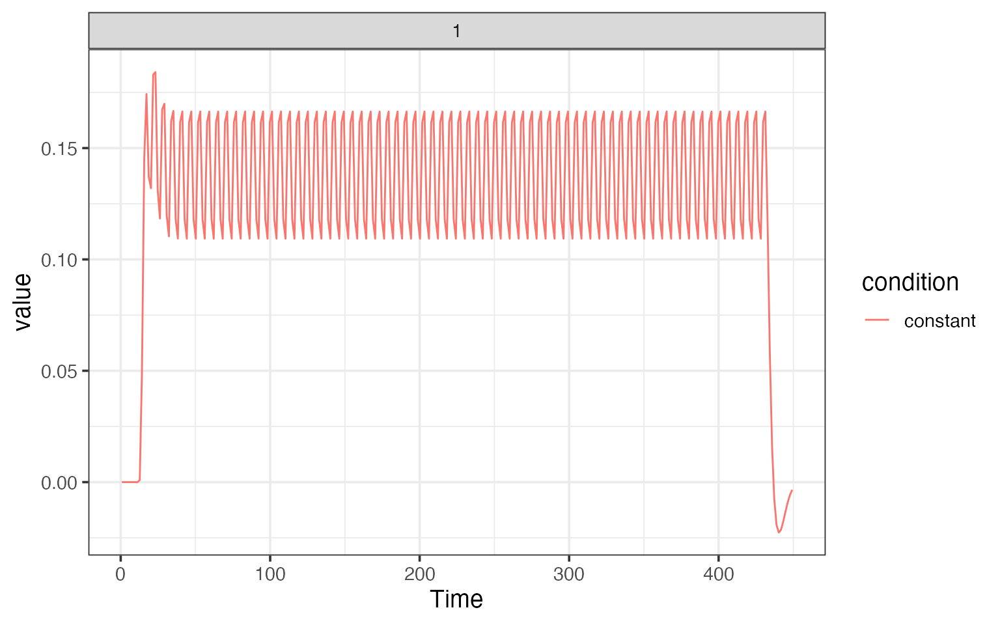
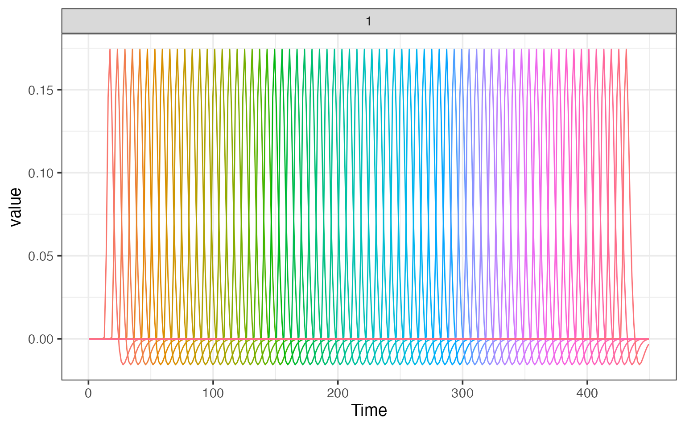

vignettes/a_07_trialwise.Rmd
a_07_trialwise.RmdIt is common in fMRI analysis want to obtain estimates of BOLD amplitude for each trial (rather than condition) in an experiment. Estimation of single-trial beta coefficients can be done in fmrireg with the estimate_betas function.
First we load in an experimental design.
library(dplyr) library(fmrireg) facedes <- read.table(system.file("extdata", "face_design.txt", package = "fmrireg"), header=TRUE) %>% filter(run == 1) ## we had a constant value to the design used later to model the mean stimulus response over all trials. facedes$constant <- factor(rep(1, nrow(facedes)))
Now we generate an fMRI data using random values.
D <- 5 scans <- lapply(1:length(unique(facedes$run)), function(i) { arr <- array(rnorm(D*D*D*300), c(D,D,D, 300)) bspace <- neuroim2::NeuroSpace(dim=c(D,D,D,300)) neuroim2::NeuroVec(arr, bspace) }) mask <- neuroim2::LogicalNeuroVol(array(rnorm(D*D*D), c(D,D,D)) > 0, neuroim2::NeuroSpace(dim=c(D,D,D)))
Now we create a instance of type fmri_mem_dataset which encapsulates infromation about the data, temporal layout, and experimental design of an “in memory” fmri dataset.
dset <- fmri_mem_dataset(scans=scans, mask=mask, TR=1.5, event_table=facedes)
Now we’re ready to run the beta estimation analysis. There are two components to the model: a fixed effects formula and a random effects formula. The fixed effects part models the condition-specific responses, and the random effects part models the trial-specific responses. For the random effect part, we want to model every onset separately, so we use the trialwise hrf modeling function. For the fixed part, we use a standard hrf modeling function.
The method we use is “pls” for partial least squares (via the pls package), which effectively acts as a regularized least squares estimation procedure. Simulations show that pls produces trialwise beta estimates for closely space onsets (e.g. overlapping hrfs) that are similar to the “least squares sum” approach (citation needed). By modeling the mean effect with fixed = onset ~ hrf(constant) the “random effects” onset ~ trialwise() capture the deviations from that mean, with regularization achieved by using partial least squares estimation with a small number of components (here, n=3). Other fixed effects can also be modeled, and could include events of no interest that should be covaried out when estimating the beta coefficients of interest.
When the onsets are not closely space together, ordinary least squares using the “ols” method is appropriate. For method “ols”, however, a constant fixed effect should not be used, since it is a linear combination of the random effects, so we omit the “fixed” term.
res <- estimate_betas(dset, fixed = onset ~ hrf(constant), ran = onset ~ trialwise(), block = ~ run, method="pls", ncomp=3) names(res)
## [1] "betas_fixed" "betas_ran" "design_ran" "design_fixed" "design_base"
## [6] "basemod" "fixed_model" "ran_model"res_ols <- estimate_betas(dset, ran = onset ~ trialwise(), block = ~ run, method="ols", ncomp=3)
We can plot the fixed effects model, which here is a single regressor.
plot(res$fixed_model)

We can also plot the random effects model, where there is one regressor per trial.
plot(res$ran_model)
